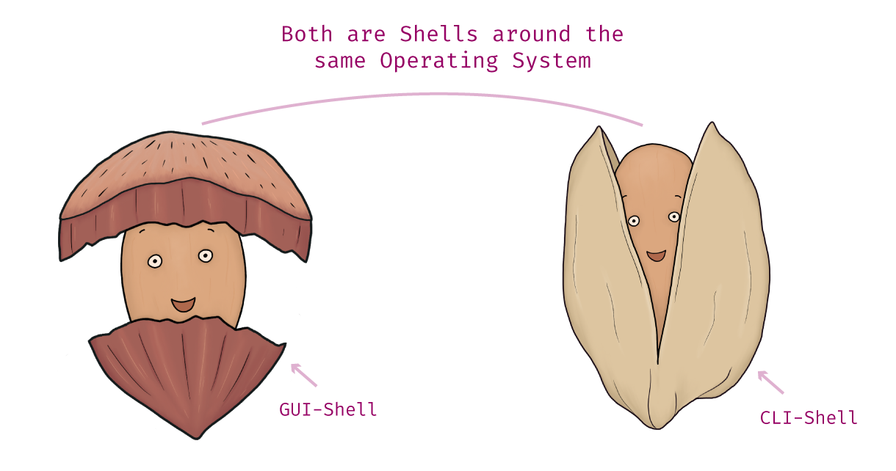
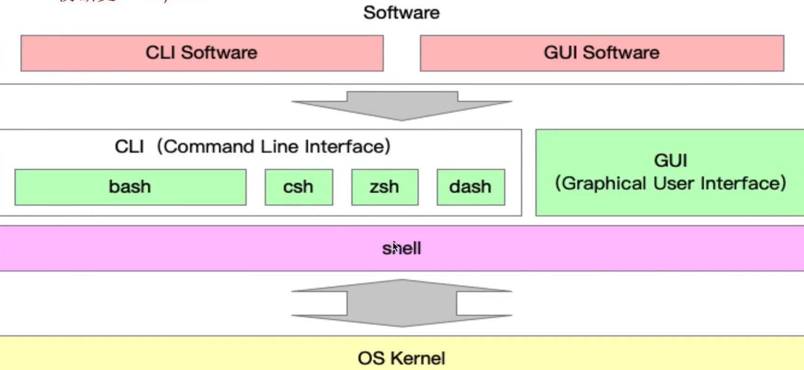

Cli
Cli 101
shell
shell provide interface to interact with other programs

to find the path of executable from env variable($PATH)
to find the path of built-in command- bash and zsh as shell implementation
cat /etc/shells
# List of acceptable shells for chpass(1).
# Ftpd will not allow users to connect who are not using
# one of these shells.
/bin/bash
/bin/csh
/bin/dash
/bin/ksh
/bin/sh
/bin/tcsh
/bin/zsh
- cli(text-based user interface)
clis accpet input command that are entered by keyboard
vendor of cli
- terminal in macos
- powershell in windows
type of CLI commands include the following:
- executable programs
- batch programs
- system commands
cli add-on feature
- Scripting capability
- Command pipes
- System variables
- Command history

cli client in use
脚手架实现原理
vue.js w/ shebang
ln -s /path/to/file_or_directory path/to/symlink
cli framework
- yargs
- gulp-cli
- rollup-cli(vie底层)
- create-vue scafold
- commander
- vue-cli
- wepack-cli
- create-react-app
- oclif(脚手架生成)
vue dev workflow
node/bin
本地调试
-
全局安装发布上线的脚手架
-
全局卸载上线的脚手架
-
symlink指向本地项目
-
npm linkin a package folder with no arguments will create a symlink in the global folder {prefix}/lib/node_modules/that links to the package where the npm link command was executed. -
it will also link any bins in the package to {prefix}/bin/{name}. Note that npm link uses the global prefix (see npm prefix -g for its value).
➜ npm link
➜ bin ls -l Users/ayao/.nvm/versions/node/v22.4.1/bin/
quarte -> ../lib/node_modules/@quarte/cli/bin/cli.js
➜ tree /Users/ayao/.nvm/versions/node/v22.4.1/lib/node_modules/ -L 2
├── @quarte
│ └── cli -> ../../../../../../../project-clone/cli/4am/packages/cli
npm i 4am 在全局node/lib/node_modules/<pgk_name>找到库包(scoped package)
➜ cli cd 4am
➜ 4am npm link
➜ 4am ls -la /Users/ayao/.nvm/versions/node/v22.4.1/lib/node_modules/
4am -> ~/project-clone/cli/4am
➜ 4am
debug setup
-
分包
-
包的发布上线
-
命令注册
参数解析
- 可选参数 - 必选参数 - option fullname:--version, --help
- option shorthand: -V, -h
- option w/ params: --path ~/projects/project-generator
- normalizeCommandLineOptions or Command-line argument parsing
const argv = process.argv.slice(process.argv.indexOf("init") + 1)
const versions = []
const main = () => {
if(argv.length) return help()
while(argv.lenght) {
// --version=1.0.0
let option = argv.shift()
const idxOfEqualSign = option.indexOf("=")
if(idxOfEqualSign > -1) {
const val = option.slice(idxOfEqualSign + 1)
option = option.slice(0,idxOfEqualSign)
argv.unshift(val)
}
}
switch(option) {
case '-v': case '--version':
versions.push(argv.shift())
break
}
}
const help = () => console.log(
`
A JavaScript implementation of the https://semver.org/ specification
Usage: semver [options] <version> [<version> [...]]
Options:
-r --range <range>
Print versions that match the specified range
`
)
main()
colored output
为什么要使用node.js开发脚手架?
- node.js ecosystem
built-in libs: fs, path, os, child_process 3rd-patry libs: commander, yargs, fs-extra, rxjs
-
包管理系统,可以快速完善cli发布更新
-
chainable
命令行交互
run to completion pause and resume
node.js最先进的脚手架设计理念和开发方法
自主搭建前端脚手架,覆盖前端研发全流程
项目创建->项目下载->项目测试->项目提交->项目发布
项目创建自动化
项目模版配置
项目渲染动态化
包下载
代码规范检查工具
代码自动化测试工具
明星级脚手架源码解读
create-vue
function toValidProjectName(projectName) {
return projectName.
.toLowerCase()
.trim()
.replace(/^[\._]/,"")
.replace(/\s+/g, "-")
.replace([^a-z0-9-], "-")
}
前端脚手架面试题
通过debug的方式阅读cli框架源码
脚手架框架封装
脚手架通用框架开发流程
- 初始化
- 命令注册和执行
- 自动化测试
初始化
通过lerna创建package
命令注册和执行
- commander框架
- 封装通用command类
- 基于command派生出initCommand
- 命令的注册和执行
- cjs和esm混合开发的问题
自动化测试
- jest = 测试过程中的兼容性问题
项目项目创建脚手架（project generator)
核心依赖库：
交互 - commander: 命令注册和参数解析，用于处理输入命令 - inquirer: 通用的命令行用户界面集合，用于和用户进行交互
样式和动画 - chalk colored output - ora terminal spinner, loading indicator - log-symbols:Colored symbols
模版 - download-git-repo 拉取存放在git仓库中的项目模版 - handlebars.js 模板引擎，将用户提交的信息动态填充到文件中 - 从npm register拉取项目模版
配置项目模版
- node版本检测
function checkVersion(processVersion, requiredVersion) {
if(!semver.satisfies(processVersion,requiredVersion, {incluePrelease: true})){
}
process.exit(1)
}